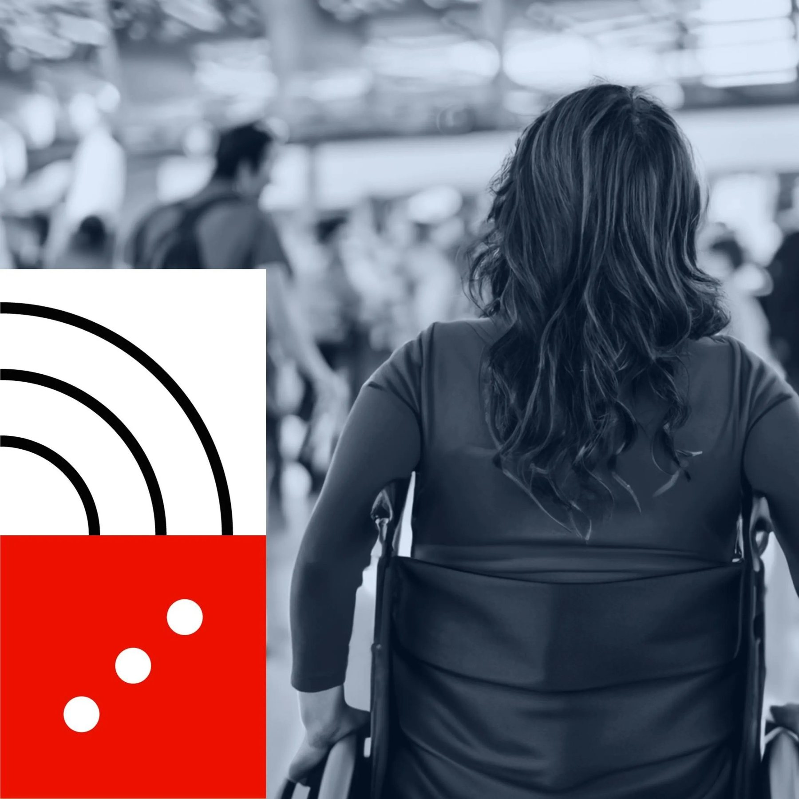

Get updates
Occasional insights. No spam, just the good stuff.
On AI-enabled design, leadership, and organizational transformation. The stuff I'd send a smart friend.
Subscribe on Substack →
Perspective

Over the summer, I learned how difficult it can be to travel with a disability, albeit temporary for me. Some might say the experience was unfortunate, but for me, it was enlightening. In addition to identifying numerous opportunities to create more inclusive travel experiences, I also discovered potential avenues to tackle economic inequality.
To provide a little context: I had torn the ligament in my hip socket for the second time. And when a previous surgery to repair the injury didn't hold for the long term, my doctor suggested a full hip replacement was in order. I had been in pain for close to a year at that point and was willing to resolve that by any means necessary, with not much consideration for how my life would change in the short term.
The surgery went smoothly as planned, as did the first week and a half of recovery. But by the following week, I experienced something un-plannable. Part of my post-op mandate was to avoid air travel for six weeks, but I already had to break the rules of my recovery. Unfortunately for my family, we suddenly lost my brother, and I found myself having to travel across the country in my second week of recovery.
As soon as I received clearance to fly, my husband was able to secure us first-class tickets using his long-saved miles. Sitting was still quite uncomfortable for me, and knowing I would have a more cushy and sizable seat at the front of the plane gave me great peace of mind. He also made arrangements for me to have a wheelchair service from drop-off to the terminal. But when we arrived at LAX, things didn't go as planned.
We parked in economy parking and hobbled down to get our shuttle to the airport. It was an early Wednesday morning, and the shuttle looked packed. I was nervous about tackling the big step up to the bus with my cane. I had still been heavily reliant on a walker but decided it would be too difficult to travel with. I successfully took the big step up with great relief, made eye contact with many of the seated passengers who saw the struggle, and not one moved. Or offered their seat. Or offered to help. After negotiating luggage, we managed to find a seat in the back a few more steps up and continued on our bumpy ride to the terminal.
At the time, I thought to myself that we could have paid for an Uber instead, but for some, a bus or shuttle ride may have been their only option.
We began the loop around the airport and the terminal drop-offs. Terminal 1, Terminal 2, Terminal 3, Terminal…5? What happened to 4? Confused, we got off at Terminal 5 and learned that since Terminal 4 was under construction, there was no stop there. The terminals weren't connected on the inside, so to get to Terminal 4, we had to walk through a construction site. In the dark. "Go, run, get in line, I'll be okay," I lied to my husband. I was okay in the end, but as a clumsy person, remembering all of the warnings about how in the first six weeks a fall could dislocate the hip, I was secretly sweating bullets. I managed through the rough construction terrain with others buzzing past me with their luggage. By the time I got to the terminal, my husband, who had successfully checked our bag, informed me that the wheelchair pickup had a wait of 15 to 20 minutes. I looked to the wheelchair waiting area and saw ten people ahead of me but no wheelchairs in sight. It's going to be longer than that, I thought. And at that point, we may not have had that much time to spare.
So we began the journey to TSA on foot and with a cane. Again, I was nervous about everything: people running into me, getting on the escalator, and managing the process with TSA. We assumed that having PreCheck would make it easier. We got past security and loaded our belongings on the conveyor belt. "Cane, too, ma'am." Ummmmmm. "How do I walk through here? I just had my hip replaced and can't walk without it." They held me back, while my husband, our luggage, and my cane made it through. They handed me a wooden cane. "Take this, but we're going to need you to walk over to the full body scan a few aisles over." A TSA agent escorted me through hoards of unhappy travelers to get through another line so that they could confirm that there was, in fact, a titanium hip inside of me. My husband, meanwhile, had no idea where I was or what had happened, and my phone was with him. After the scan and the subsequent pat down, I made it through and got reunited with him and my trusty cane. He was stressed, I was stressed, and we hadn't even boarded the plane yet.
We slowly made our way down to the very crowded terminal, and I managed to grab the last accessible seat, hopping over the many belongings of a teenager playing video games on his phone. He heard us talk about our boarding plans and offered up his seat to my husband. Good kid, I thought.
We boarded the plane in advance to avoid any potential pushing or tripping, and I took my seat in first class. First seat, first row. My cane had to go in the overhead bin for the flight, but I mentally mapped out my path to the bathroom, which basically entailed bouncing off walls along the way.
What if we didn't have the miles to upgrade our flight, as I am sure would be the case for many? How could I or others safely negotiate getting to the bathroom? It's already a challenge to make it down the tight aisles, and turbulence certainly doesn't make it easier. How might airlines do better to accommodate?
Beverly, my wheelchair aide, greeted me when we arrived at the Philadelphia gate. In our short time together, she navigated us through a less crowded path, allowed me time to use the restroom, and expressed her sorrow for my brother's passing. She was cheerful, kind, and, though exhausted, grateful for her job and the hours she had that week. She shared that, as a single mom of three with very little money for fun, she thought she might splurge and spend $50 on a hotel that weekend to take her kids swimming. Times were tough for Beverly. I thought about her: if she were in my situation, would those financial limitations make travel an even greater challenge for her? Beverly safely escorted me to baggage claim, and when we parted ways, we had a big hug. I appreciated how much care and compassion she showed me. I gave her $50 and told her to go book that hotel.
The rest of the trip was focused on mental healing with my family and friends. Luckily, the travel back to LAX was relatively smooth. The process was much easier getting through PHL, and wheelchairs were on hand for me on both legs of the trip.
Safe, accessible experiences for travel shouldn't be afforded only to those who have the means to pay for upgrades. They should be afforded to all. Airports can do better, airlines can do better, and we, as a society, above all else, can do better. Kindness, empathy, and understanding can go a long way in improving experiences for everyone.
And LAX, shame on you. As the second largest city in the country, you can and should do better at making travel more accessible. Airlines, you too: there are many stories and videos shared over the years of damaging wheelchairs, as if travel wasn't challenging enough without that. PHL, you are still my first love, and I'm so proud of your great showing of brotherly love on this trip, though you still have some room to improve.
Another important lesson, though not related to accessibility: take time to take care of yourself, your health, and your family. Life is short. Make it count.
One last note: hip replacements aren't just for "old people," despite what many have shared with me when learning of my surgery. Yes, I did in fact have a milestone birthday this summer, but my replacement was to fix an injury, and many others like me have hips replaced for this reason or to correct a genetic malformation. Let's work on that bias while we're at it, too.
Get updates
On AI-enabled design, leadership, and organizational transformation. The stuff I'd send a smart friend.
Subscribe on Substack →